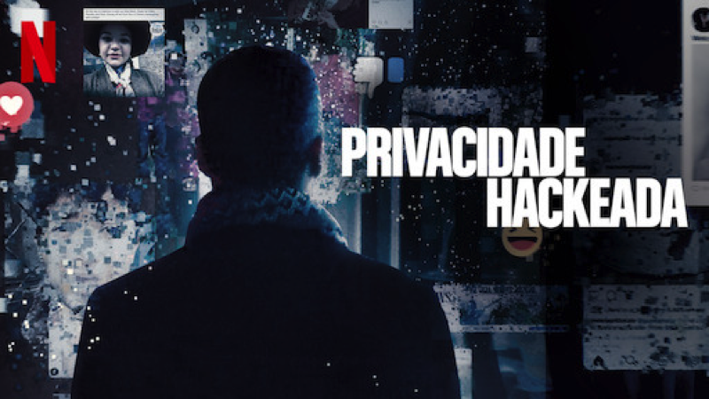

Privacidade Hackeada
.png)
Eles pegaram seus dados, assumiram o controle, hackearam a democracia e estão colocando em prática um projeto de poder ultradireitista. Existe uma realidade filtrada nas plataformas digitais, onde é possível criar e espalhar propaganda direcionada a alvos específicos e vulneráveis, selecionados por meio de cruzamento de dados digitais, o Big Data. Esse é o tema central do recém-lançado Privacidade Hackeada (The Great Hack, documentário, 2019, Netflix, 2h19), que expõe o perigoso mundo da exploração de dados através de histórias reais de diferentes lados do escândalo Cambridge Analytica/Facebook. Trata de como a internet pode e está sendo usada para manipular indivíduos, um a um, e dividir o mundo, com consequências em eleições sérias e que merece a nossa reflexão dos EUA ao Reino Unido, passando pelo Brasil.
O documentário tem participação especial de David Carroll, professor universitário que se envolveu numa batalha judicial com a Cambridge Analytica para reclamar os seus dados, e de Carole Cadwalladr, jornalista do The Guardian que, junto com o delator (whistleblower, em inglês) Christopher Wylie, tornou pública a primeira parte da história sobre a Cambridge Analytica.